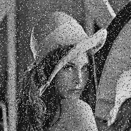
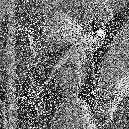
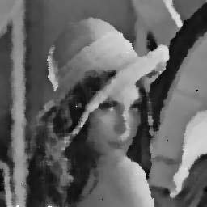
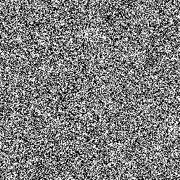
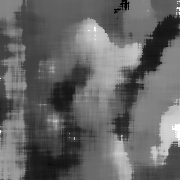
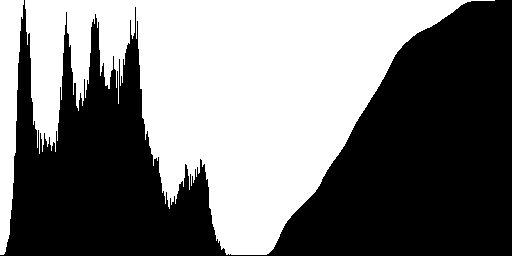

|
INFO702 - TPs
|
L'objectif de ce TP est de vous familiariser avec la programmation objet classique en C++. Il n'y aura pas explicitement de la généricité, mais on définira néanmoins des objets classiques en programmation générique (comme les itérateurs). Ce TP servira de base à l'écriture d'une classe générique image au TP suivant. A l'issue de cette séance, vous maîtriserez:
vector et du quasi-conteneur string Le fil conducteur est l'écriture d'une classe pour représenter les images en niveaux de gris. Vous développerez un certain nombre de services autour de ces images:
Les sites suivants pourront être utile pendant le TP:
Note: Tout bon logiciel de manipulation d'image peut importer ou exporter du portable pixmap (PBM, PGM, PPM). Le logiciel ImageMagick (commandes convert et display notamment) est bien pratique pour convertir en ligne de commande une image:
prompt> convert toto.jpg toto.pgm prompt> display toto.pgm
make démarre le TP en 5 minutes.ios::binary ou ios::text à l'ouverture des fichiers)Nous représenterons les images en niveaux de gris de façon classique, avec un tableau de taille W*H de caractères (les niveaux de gris sont un nombre entre 0 et 255), et W et H sont respectivement la largeur et la hauteur de l'image. Vous déclarerez donc la classe GrayLevelImage2D dans un fichier GrayLevelImage2D.hpp. Un extrait du fichier entête donne:
On utilisera la classe std::vector de la STL. Cela nous évitera toute allocation dynamique ! Il suffit soit de l'initialiser avec la bonne taille (i.e. donc largeur * hauteur), soit d'appeler vector::resize pour changer la taille. Ecrivez donc cette première version de la classe GrayLevelImage2D, avec les deux constructeurs précisés. Faut-il réécrire le constructeur par copie et l'affectation ?
NB: les méthodes seront écrites dans un fichier source GrayLevelImage2D.cpp.
Le principe est que les valeurs de l'image sont stockées les unes à la suite des autres en balayant l'axe des x d'abord. Par exemple, cela donne les indices suivants dans le tableau m_data:
| Pixel (x,y): | (0,0) | (1,0) | ... | (w-1,0) | (0,1) | (1,1) | ... | (w-1,h-1) |
|---|---|---|---|---|---|---|---|---|
| Indice | 0 | 1 | w-1 | w | w+1 | w*(h-1)+w-1 |
On écrira donc une méthode (privée) int index( int x, int y ) const qui retourne l'indice du pixel de coordonnées (x,y).
Cette fonction sera utilisée partout où il faut convertir les coordonnées en l'indice dans m_data.
On ajoutera aussi les méthodes suivantes:
On testera les méthodes précédents en créant un fichier testGrayLevelImage2D.cpp. Vous pourrez utiliser le Makefile suivant:
LD=g++
CXX=g++ -Wall -std=c++11 -g -c
EXEC_SRC=\
testGrayLevelImage2D.cpp
MODULE_SRC=\
GrayLevelImage2D.cpp
MODULE_OBJ=${MODULE_SRC:.cpp=.o}
EXEC_OBJ=${EXEC_SRC:.cpp=.o}
EXEC_PRG=${EXEC_SRC:.cpp=}
all: ${EXEC_PRG} ${MODULE_OBJ} ${EXEC_OBJ}
testGrayLevelImage2D: testGrayLevelImage2D.o ${MODULE_OBJ}
${LD} ${MODULE_OBJ} $< -o $@
.cpp.o: %.cpp %.hpp
${CXX} $<
clean:
rm -f ${EXEC_PRG} ${MODULE_OBJ} ${EXEC_OBJ}
Il vous suffira alors à vous de taper la commande make dans votre terminal pour que tout soit compilé.
Le programme principal testGrayLevelImage2D.cpp contiendra au moins:
qui devra fonctionner et afficher (bien sûr):
5 5 5 5 5 5 5 5 5 5 5 5 5 5 5 5 5 5 5 5 5 5 5 5 5 5 5 5 5 5 5 5 5 5 5 5 5 5 5 5 5 5 5 5 5 5 5 5 5 5 5 5 5 5 5 5 5 5 5 5 5 5 5 5
Le programme précédent montre comment accéder pixel par pixel à l'image. L'avantage est que l'on donne un sens géométrique aux indices dans le tableau. C'est donc tout à fait pertinent dans les cas où la position géométrique du pixel doit être exploité. En revanche, il existe un certain nombre d'algorithmes où l'on ne fait que traiter en séquence les valeurs de pixel, sans se préoccuper de leur position. On peut citer:
Dans ce cas, il est utile de pouvoir énumérer (le plus rapidement possible) les valeurs de l'image, comme si on parcourait directement le tableau m_data.
Pour faire tout cela proprement, on introduit une classe Iterator, interne à GrayLevelImage2D, que l'on fait dériver de std::vector<GrayLevelImage2D>::iterator. Cela permet de récupérer tous les services usuels des itérateurs, en ajoutant des possibilités supplémentaires si on veut faire évoluer nos itérateurs. On écrira donc:
Il ne reste plus qu'à écrire le constructeur de Iterator à partir d'une image et des coordonnées d'un pixel. Attention, on note que dans GrayLevelImage2D.cpp, le prototype du constructeur de Iterator est:
On utilise d'une part la méthode std::vector::begin() appliquée au vecteur m_data pour récupérer un itérateur sur le début du tableau, puis il suffit d'additionner l'indice du pixel (x,y) pour décaler l'itérateur au bon endroit. Cela donne
Il suffit maintenant d'écrire une méthode Iterator start( int x,
int y ) dans GrayLevelImage2D qui fabrique l'itérateur qui pointe sur la valeur du pixel (x,y) (c'est juste le bon appel du constructeur de Iterator), puis les méthodes begin et end qui sont des cas particuliers de start.
Avec cela, on peut remplacer l'affichage de la section précédente (3 - Accesseurs utiles (taille, valeurs de niveaux de gris).) par le code suivant:
Le format PGM [http://fr.wikipedia.org/wiki/Portable_pixmap PBM image format] permet de stocker très simplement les images en niveaux de gris sous forme de fichier. Le format PGM a deux formes, selon que les valeurs sont stockées en clair sous forme ASCII (le fichier est lisible et éditable, mais prend 3 fois plus de place sur le disque), ou stockées en format brut octet par octet.
Exemple d'une image 256 x 256 stockée sous forme ascii.
P2 # CREATOR: XV Version 3.10a Rev: 12/29/94 (PNG patch 1.2) 256 256 255 0 0 1 10 53 67 45 0 12 12 ...
Exemple d'une image 256 x 256 stockée sous forme brute.
P5 # CREATOR: XV Version 3.10a Rev: 12/29/94 (PNG patch 1.2) 256 256 255 ... le reste est illisible
Nous allons utiliser les flux (stream) pour représenter les fichiers en entrée ou en sortie. On incluera les entêtes suivants:
On écrira donc les méthodes suivantes pour la classe GrayLevelImage2D.
Maintenant, pour ouvrir un fichier "toto.pgm" en lecture on écrira:
Une fois qu'un flux est ouvert, c'est facile de lire dedans avec les opérateuurs de flux >> et std::getline.
On peut aussi utiliser une chaîne de caractères comme un flux, grâce aux classes istringstream et ostringstream. Ainsi, la chaîne "123 45 54" est décomposée en trois entiers ainsi:
Ecrire les méthodes bool importPGM( std::istream & input ) et bool exportPGM( std::ostream & output, bool ascii_mode ) const de la classe GrayLevelImage2D, en utilisant les flux.
On pourra maintenant lire un fichier image "lena.pgm" ainsi:
On testera nos fonctions avec le mini-programme double-brightness.cpp suivant, qui double la brillance d'une image:
N'oubliez pas de mettre à jour le Makefile. Si vous l'exécutez sur l'image "lena.pgm", l'affichage donne:
A l'inverse, lorsque vous lisez des données brutes comme des suites d'octets, vous voulez que les espaces soient bien l'octet 32 et non des séparateurs, pareil pour les retours chariots (13). Pour être sûr d'avoir ce comportement, on écrit la commande suivante dans le flux d'entrée:
N'oubliez pas des les utiliser à bon escient dans la fonction bool importPGM( std::istream & input ).
Le filtrage médian est un algorithme très simple d'élimination de bruit dans une image. Il est très pertinent pour ce que l'on appelle le bruit impulsionnel, causé par des capteurs défectueux, ce qui sature ou désature complètement la valeur de certains pixels (ils deviennent tout blanc ou tout noir).
Son principe est le suivant. On se donne un voisinage autour de chaque pixel (par exemple un voisinage 3x3). On met toutes les valeurs de ces pixels dans un tableau (ici 9 valeurs). On remplace la valeur du pixel par la valeur médiane des valeurs du tableau (On peut par exemple trier le tableau et prendre la 5ème valeur).
Implémenter un algorithme de filtrage médian sous forme de commande en-ligne filtrage-median similaire à double-brightness. On pourra donner en plus un paramètre entier k, qui indique la taille du voisinage (2k+1 x 2k+1) autour de chaque point.
| pourcentage de pixels "bruités" | image source | taille voisinage | résultat médian |
| 10% |  | 3x3 | |
| 50% |  | 7x7 |  |
| 90% |  | 31x31 |  |
vector), n'oubliez pas d'utiliser la fonction std::sort définie dans le header <algorithm>. Par exemple, on peut écrire:GrayLevelImage2D::at). Attention aussi aux pixels proches du bord de l'image, leur voisinage est alors plus limité.L'histogramme d'une image \(I\) en 256 niveaux de gris est une fonction \(h_I\) qui associe à chaque niveau de gris i la proportion de pixels qui ont exactement ce niveau de gris:
\[ h_I: \{0,\ldots,255 \} \rightarrow \lbrack 0,1 \rbrack, \quad i \mapsto h_I( i ) = \frac{\#\{(x,y), I(x,y)=i \}}{\#\{(x,y)\}} \]
où # désigne le nombre d'éléments d'un ensemble et les (x,y) sont les pixels de l'image. En un sens, c'est la probabilité qu'un pixel pris au hasard ait un niveau de gris donné. Un autre outil important est l'histogramme cummulé \(H_I\) d'une image \(I\). Il s'agit simplement d'associer à chaque niveau de gris i la proportion de pixels qui ont ce niveau de gris ou moins.
\[ H_I: \{0,\ldots,255 \} \rightarrow \lbrack 0,1 \rbrack, \quad i \mapsto H_I( i ) = \frac{\#\{(x,y), I(x,y) \le i \}}{\#\{(x,y)\}} \]
On note facilement que \( H_I(g) = \sum_{i=0}^g h_I(i) \).
Un histogramme est dit bien balancé si à peu près tous les niveaux de gris sont équiprobables. En général, une bonne photo a un histogramme bien balancé. Une photo sous-exposée a tendance à avoir un histogramme décalé vers les niveaux de gris sombres, tandis qu'un photo sur-exposée a tendance à avoir un histogramme décalé vers les niveaux de gris clairs.
Image lena.pgm |

Histogramme (à gauche) et histogramme cumulé (à droite) |
Or, on peut corriger automatiquement une image pour que son histogramme soit bien balancé. Cette opération s'appelle égalisation d'histogramme. Comment est-ce possible ? Il suffit de trouver une fonction \( f: \{0,\ldots,255\} \rightarrow \{0,\ldots,255\} \) qui transforme les niveaux de gris de façon à éclaircir ou assombrir au besoin l'image. Quelle est la bonne fonction f ? On la trouve en remarquant que l'histogramme cumulé d'une image bien balancée est la simplement la fonction \( i \mapsto i/255 \). On écrit donc:
\[ \frac{i}{255} = H_{f \circ I}(i) \quad = \frac{\#\{(x,y), f \circ I(x,y) \le i \}}{\#\{(x,y)\}} \quad = \frac{\#\{(x,y), I(x,y) \le f^{-1}(i) \}}{\#\{(x,y)\}} \quad = H_{I}( f^{-1}(i)) \]
En posant \( j=f^{-1}(i) \), il vient \( i = f(j) \), et l'équation précédente s'écrit:
\[ \frac{f(j)}{255} = H_{I}( j ) \]
La fonction d'égalisation f est donc tout simplement :
\[ f : j \mapsto f(j) = 255 \times H_{I}( j ) \]
Ecrivez une classe Histogramme qui contiendra deux tableaux de 256 entrées double, l'un pour \(h_I\), l'autre pour \(H_I\). Cette classe aura une méthode void init( GrayLevelImage2D & img ), qui parcourera l'image pour calculer son histogramme et son histogramme cummulé.
Ecrivez alors la méthode int egalisation( int j ) const dans la classe Histogramme, qui est simplement la fonction f ci-dessus. Il ne vaut reste plus qu'à faire le programme egalise.cpp qui utilise cette fonction d'égalisation sur tous les pixels de l'image. Sur l'image lena.pgm (légèrement sous-exposée) cela donne:
NB: On pourra regarder avec gimp l'histogramme des images (menu Couleurs > Niveaux).
| image source | image égalisée |
Une autre façon de traiter les images est de corriger les valeurs d'un pixel en fonction de la valeur de ses voisins et de lui-même. En générale la transformation ne dépend pas de la position du pixel dans l'image. On parle alors de convolution spatiale. Par exemple, si on suppose qu'on ne regarde que la valeur des 8 voisins plus de soi-même, on représente le filtre de convolution par une matrice 3x3:
\[ A := \begin{array}{|c|c|c|} \hline a_{-1,-1} & a_{0,-1} & a_{1,-1} \\ \hline a_{-1,0} & a_{0,0} & a_{1,0} \\ \hline a_{-1,1} & a_{0,1} & a_{1,1} \\ \hline \end{array}\]
La valeur du pixel \( p(x,y) \) est calculée en prenant les valeurs des pixels autour multipliées par le poids correspondant dans la matrice \(A\). Autrement dit:
\[ p(x,y) := a_{-1,-1} p(x-1,y-1) + a_{0,-1} p(x,y-1) + a_{1,-1} p(x+1,y-1) + \cdots + a_{1,1} p(x+1,y+1) \]
Pour implémenter un filtre de convolution, il suffit donc juste de faire le calcul précédent pour chaque pixel.
Ci-dessous, quelques exemples de filtre "classiques":
\[ M :=\begin{array}{|c|c|c|}\hline 1/9 & 1/9 & 1/9 \\ \hline 1/9 & 1/9 & 1/9 \\ \hline 1/9 & 1/9 & 1/9 \\ \hline \end{array} \qquad L :=\begin{array}{|c|c|c|}\hline 0 & -1/4 & 0 \\ \hline -1/4 & 1 & -1/4 \\ \hline 0 & -1/4 & 0 \\ \hline \end{array} \]
Le filtre M moyenne les valeurs autour de chaque pixel et rend l'image un peu plus floue, tout en éliminant des bruits dans l'image. Le filtre L, dit "Laplacien", produit une image avec des valeurs positives ou négatives. Il détecte en fait les contours de l'image. Il vaut 0 là où l'image est homogène (plus précisément là où l'image est un aplat linéaire), et est différent de 0 là où il y a des fortes variations.
Pour rehausser les contrastes, c'est-à-dire rendre l'image plus nette, un moyen est d'additionner à l'image ses propres contours (ou un coefficient fois les contours). On fabrique donc le filtre \( R_\alpha \) en additionnant au filtre identité Id un coefficient \( \alpha \) fois la matrice laplacien L. Le filtre identité vaut simplement 1 au milieu et 0 ailleurs. On obtient donc:
\[ R_\alpha := \begin{array}{|c|c|c|}\hline 0 & -\alpha/4 & 0 \\ \hline -\alpha/4 & 1+\alpha & -\alpha/4 \\ \hline 0 & -\alpha/4 & 0 \\ \hline \end{array} \]
Ci-dessous quelques exemples. Vous pourrez tester plusieurs \( \alpha \).
| image source | image floutée par M | image plus nette par \( R_\alpha \) |
Ecrivez donc un programme qui permet à l'utilisateur de rendre une image plus nette, en fonction d'un coefficient \( \alpha \) donné en paramètre par l'utilisateur.
GrayLevelImage2D::at).Mais pourquoi voudrait-on abîmer les images ? Une raison académique: pour tester ensuite les algorithmes de filtrage de bruit et de restauration. Une autre raison est parfois esthétique, par exemple pour donner l'illusion qu'une image fabriquée par ordinateur est une vraie photo. Le code ci-dessous vous montre comment on a généré le bruit impulsionnel ci-dessus.
Il est plus réaliste d'appliquer un bruit Gaussien sur les images, c'est-à-dire une perturbation de la valeur de gris par un écart qui suit une loi normale (ou Gaussienne). La méthode de Box-Muller est la plus simple pour le faire. Elle créé deux valeurs aléatoires qui suivent une loi normale à partir de deux valeurs qui suivent une loi uniforme (genre rand01()).
Ecrivez donc la commande bruit-gaussien.cpp en modifiant le fichier bruit-impulsionnel.cpp ci-dessus.